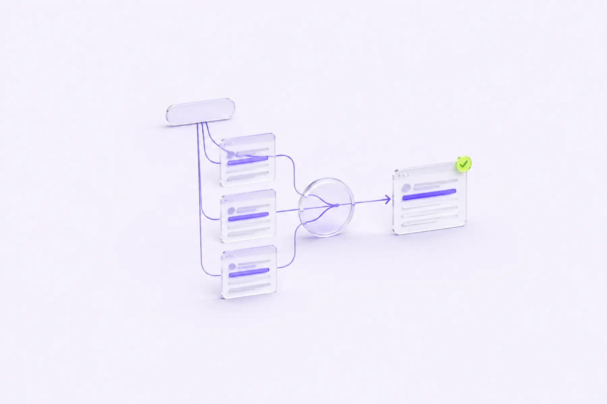

Anahtar Kelime Kanibalizasyonunun Analizi: Sayfalarınız Birbirinizle mi Yarışıyor?
Bir siteye yeni içerik eklemek her zaman trafiği artırmaz; bazen mevcut bir sayfanın trafiğini böler. Bu yazıda kanibalizasyonu Search Console verisiyle nasıl tespit edeceğinizi, hangi durumda birleştirmeniz hangi durumda ayrı tutmanız gerektiğini anlatıyorum.

"Bu konuda zaten bir yazımız var ama yeterince sıralamıyor, bir tane daha yazalım" cümlesini SEO danışmanlığında sık duyarım. Genelde iyi niyetle söylenir ama çoğu zaman sonucu tam tersi olur: yeni sayfa, eski sayfanın az miktardaki otoritesini de kendisiyle paylaşmaya başlar ve ikisi de birbirini SERP'te aşağı çeker. Buna anahtar kelime kanibalizasyonu denir — aynı arama niyetine hizmet eden birden fazla sayfanın, kendi sitenizin içinde birbiriyle rekabet etmesi.
Bu sorun özellikle uzun süredir aktif olan, çok yazarlı ya da farklı ajanslarla çalışılmış sitelerde birikir; kimse kötü niyetle hareket etmez, sadece geçmişte yayınlanmış içeriklerin tam envanteri elde bulunmadığı için aynı konu farklı zamanlarda tekrar tekrar ele alınır. Bu yazıda hem bu birikimi geriye dönük nasıl temizleyeceğinizi hem de yeni içerik üretirken bunu baştan nasıl önleyeceğinizi ele alıyorum.
1. Kanibalizasyon neden gerçek bir sorun?
Google bir sorgu için hangi sayfanızı göstereceğine karar verirken, sitenizdeki en alakalı tek sayfayı seçmeye çalışır. Eğer iki sayfanız da benzer alaka düzeyindeyse üç şey olabilir:
- Google, sıralamaya göre "daha iyi" bulduğu sayfayı gösterir, ama bu sayfa dönüşüm için en optimize ettiğiniz sayfa olmayabilir.
- Google, hangisinin gösterileceğine dair kararsız kalır ve zamanla farklı aramalarda farklı sayfayı gösterir (sıralama dalgalanması) — bu, backlink ve içerik sinyallerinin tek bir sayfada birikmemesi anlamına gelir.
- Her iki sayfa da, tek bir güçlü sayfanın alabileceği sıralamadan daha düşük bir sırada kalır, çünkü ne biri ne diğeri sorgunun tüm alaka sinyalini tek başına taşıyor.
Sonuç, iki sayfaya bölünmüş, ayrı ayrı zayıf iki performans. Oysa aynı içerik ve dış bağlantı sinyali tek bir sayfada birleşseydi, muhtemelen ikisinin toplamından daha iyi bir sıralama elde edilirdi.
2. Kanibalizasyon her zaman kötü değildir
Burada önemli bir ayrım var: aynı anahtar kelimeyi içeren iki sayfa, aynı niyete hizmet etmiyor olabilir. "Kahve makinesi" araması hem bilgi almak isteyen (kahve makinesi çeşitleri, nasıl seçilir) hem satın almak isteyen (kahve makinesi fiyatları, ürün sayfası) kullanıcılar için yapılabilir. Bu iki niyeti karşılayan iki ayrı sayfaya sahip olmak kanibalizasyon değil, tam tersine niyet çeşitliliğini doğru karşılamaktır. Gerçek kanibalizasyon, aynı niyete hizmet eden, aynı kullanıcı sorusuna aynı derinlikte cevap veren iki sayfanın var olmasıdır.
3. Search Console ile tespit yöntemi
Kanibalizasyonu tespit etmenin en güvenilir yolu, tahmin yürütmek değil, gerçek arama performansı verisine bakmaktır. Adım adım süreç şöyle:
- Search Console'da Performans raporuna gidin, Sayfalar ve Sorgular tablolarını yan yana açın.
- Şüphelendiğiniz bir sorguyu (ör. sitenizin ana hizmet/ürün konusu) filtre olarak girin ve "Sayfalar" sekmesine geçin.
- Aynı sorgu için birden fazla URL'nin gösterim aldığını görüyorsanız, bu bir kanibalizasyon adayıdır. Özellikle gösterimlerin iki sayfa arasında ay bazında yer değiştirdiğini (bir ay A sayfası, ertesi ay B sayfası öne çıkıyor) görüyorsanız bu, Google'ın hangisinin daha alakalı olduğuna karar veremediğinin güçlü bir işaretidir.
- Aynı analizi, site genelinde otomatikleştirmek için Search Console verisini API veya BigQuery export'u üzerinden çekip, sorgu bazında gruplandırıp birden fazla farklı sayfanın göründüğü sorguları filtreleyen bir tabloya dökebilirsiniz.
-- BigQuery export kullanıyorsanız basit bir mantık örneği
SELECT query, COUNT(DISTINCT page) AS sayfa_sayisi
FROM search_console_export
WHERE date >= DATE_SUB(CURRENT_DATE(), INTERVAL 90 DAY)
GROUP BY query
HAVING sayfa_sayisi > 1
ORDER BY SUM(impressions) DESCBigQuery'e erişiminiz yoksa, Search Console arayüzünde manuel olarak en çok gösterim alan 50-100 sorguyu tek tek "Sayfalar" filtresiyle kontrol etmek de küçük ve orta ölçekli siteler için yeterli bir başlangıçtır.
4. Niyet ayrıştırma: hangi sayfa kalmalı?
Kanibalizasyon tespit edildikten sonra asıl karar süreci başlıyor: iki sayfadan hangisi "kazanan" sayfa olmalı? Bunu belirlerken baktığım kriterler:
| Kriter | Neden önemli |
|---|---|
| Hangi sayfa daha fazla dış bağlantı (backlink) almış? | Otorite sinyali zaten o sayfada birikmiş demektir |
| Hangi sayfa daha yüksek dönüşüm oranına sahip? | İş hedefi açısından "doğru" sayfa bu olabilir |
| Hangi sayfa daha kapsamlı/güncel içeriğe sahip? | Birleştirme sonrası içerik kalitesi kaybı yaşanmaz |
| Hangi URL yapısı sitenin bilgi mimarisine daha uygun? | Uzun vadeli URL stratejisiyle tutarlılık sağlar |
Bu dört kritere göre net bir kazanan çıkmıyorsa, genelde dönüşüm oranı ve backlink sayısı en belirleyici iki faktör oluyor; bir sayfa çok daha fazla dış bağlantı almışsa, içerik kalitesi biraz daha düşük olsa bile o sayfayı korumak (ve içeriğini diğerinden gelen bilgilerle zenginleştirmek) genelde daha hızlı sonuç veriyor.
5. Birleştirme: canonical mı, 301 mi?
Kazanan sayfa belirlendikten sonra iki teknik yöntem var:
- 301 yönlendirme: Kaybeden sayfayı tamamen kaldırıp, tüm trafiği (ve birikmiş dış bağlantı sinyalini) kazanan sayfaya yönlendirmek. Kaybeden sayfanın ayrı bir kullanıcı ihtiyacına hizmet etmediği, gerçekten gereksiz bir tekrar olduğu durumlarda doğru seçim budur.
- Canonical etiketi: Her iki sayfanın da kullanıcı için ayrı ayrı erişilebilir kalması gerekiyorsa (ör. filtrelenmiş bir liste sayfası ile ana kategori sayfası), ama arama motoruna "asıl indekslenmesi gereken bu" demek istiyorsanız
<link rel="canonical">kullanılır. Sayfa kullanıcı tarafından hala görülebilir, ama indeksleme sinyali tek bir URL'de toplanır.
Dikkat edilmesi gereken nokta: Birleştirme kararı verildiğinde, kaybeden sayfadaki benzersiz ve değerli içeriği (varsa) kazanan sayfaya taşımayı unutmayın. Sadece yönlendirme yapıp içeriği kaybetmek, kullanıcı açısından bir değer kaybına da yol açabilir. Aynı şekilde, kaybeden sayfanın topladığı yorumlar, değerlendirmeler ya da sosyal kanıt niteliğindeki içerikler varsa bunları da taşımak, birleştirmenin kullanıcı deneyimini zayıflatmadan yapılmasını sağlar.
Bir diğer pratik nokta, birleştirme sonrası eski URL'nin harici sitelerden aldığı bağlantıları takip etmek. Zaman zaman büyük ve otoriteli bir sitenin eski URL'e verdiği bağlantı hala o adrese işaret edebilir; 301 yönlendirme bu sinyali yeni sayfaya taşısa da, mümkünse söz konusu siteyle iletişime geçip bağlantıyı doğrudan güncel URL'e çevirmelerini istemek daha temiz ve daha az bağımlı bir çözüm sunar.
6. İç linklemeyi güncellemek
Yönlendirme ya da canonical eklemek tek başına yeterli değil; sitenizin içindeki diğer sayfalardan kaybeden URL'ye giden iç bağlantıları da kazanan URL'ye güncellemeniz gerekir. Aksi halde hem kullanıcılar hem de arama motoru botları, artık "ikincil" olan sayfaya doğru sinyal almaya devam eder; bu da birleştirmenin etkisini zayıflatır. Site içi arama ve navigasyon menülerini de bu güncellemeye dahil etmek gerekir.
7. Kanibalizasyonu baştan önlemek
Düzeltmekten daha ucuz olan, hiç oluşturmamak. Yeni bir içerik planlarken sorulması gereken basit bir kontrol listesi:
- Bu konuda zaten sitede bir sayfa var mı? Varsa, yeni bir sayfa mı gerekiyor yoksa mevcut sayfayı güncellemek mi daha doğru?
- Yeni sayfa gerçekten farklı bir arama niyetine mi hizmet ediyor, yoksa aynı niyeti farklı kelimelerle mi tekrar ediyor?
- İçerik takviminizde/URL listenizde, hedeflenen ana anahtar kelimeleri (ve yakın varyantlarını) merkezi bir tabloda takip ediyor musunuz?
- Yeni sayfa yayına alınmadan önce, hedef sorgunun mevcut hangi sayfa(lar) tarafından zaten karşılandığını Search Console'dan kontrol ediyor musunuz?
8. Blog ve kategori sayfalarında yaygın kanibalizasyon senaryoları
En sık karşılaştığım üç senaryo:
- Etiket (tag) ve kategori sayfalarının çakışması: Bir e-ticaret ya da blog sitesinde hem bir kategori sayfası hem de neredeyse aynı ürün/yazı setini listeleyen bir etiket sayfası varsa, ikisi genelde aynı sorgu için rekabet eder. Çözüm genelde etiket sayfalarını
noindexyapmak ya da kategori sayfasına canonical vermektir. - Farklı zamanlarda yazılmış, konusu örtüşen blog yazıları: "2023'te en iyi X" ve "2025'te en iyi X" gibi yıl bazlı yazılar yerine, tek bir "kapsamlı ve güncellenen" sayfa tutmak hem kanibalizasyonu önler hem de zamanla biriken otoriteyi tek sayfada toplar.
- Yerel SEO'da şehir/bölge sayfalarının birbirine çok benzemesi: Şablon bazlı üretilen, aralarında yalnızca şehir adı değişen sayfalar, yeterince özgün içerik içermiyorsa hem birbirleriyle hem de ana hizmet sayfasıyla rekabet edebilir.
9. Üçüncü parti araçlarla tespit: Search Console'un yeterli olmadığı durumlar
Search Console verisi ücretsiz ve doğrudan Google'dan geldiği için en güvenilir kaynak, ama bazı kısıtları var: yalnızca gösterim alan sorguları gösterir, henüz hiç gösterim almamış (ama potansiyel olarak kanibalizasyona yol açacak) yeni sayfaları erken uyarmaz. Bu noktada Ahrefs, Semrush gibi araçların "içerik kanibalizasyonu" ya da "pozisyon geçmişi" raporları tamamlayıcı bir katman sağlıyor:
- Bu araçlar, sitenizin tüm sayfalarını tarayıp hangi sayfaların hangi anahtar kelimeler için sıralandığını topluca gösterir; aynı anahtar kelime kümesi için birden fazla URL'nin sıralandığı durumları otomatik olarak işaretleyebilirler.
- Zaman içindeki pozisyon dalgalanmasını (bir sayfa yükselirken diğerinin aynı anda düşmesi) görselleştirerek, Search Console'daki ham veriden çıkarılması daha zor olan örüntüleri ortaya çıkarırlar.
- İçerik yayınlanmadan önce, hedeflenen anahtar kelime için mevcut sıralamaya bakıp "bu konuda zaten güçlü bir sayfamız var mı" sorusuna hızlıca cevap vermeyi sağlarlar.
Ücretsiz bir alternatif olarak, kendi CMS'inizde ya da bir tabloda tüm yayınlanmış içeriklerin başlığını, hedef anahtar kelimesini ve yayın tarihini merkezi olarak tutmak da (bir "içerik envanteri") yeni bir yazı planlanırken hızlı bir çapraz kontrol imkanı verir.
10. Vaka: bir B2B blogda üç yazının tek sayfada birleştirilmesi
Danıştığım bir B2B yazılım şirketinde, iki yıl içinde aynı konuda ("proje yönetimi yazılımı nasıl seçilir") üç ayrı blog yazısı yayınlanmıştı — her biri farklı bir yazar tarafından, birbirinden habersiz şekilde. Search Console analizinde bu üç sayfanın toplamda aynı 40'a yakın sorgu için gösterim aldığı, ama hiçbirinin ilk sayfada istikrarlı bir sıralamaya oturamadığı görüldü.
En çok backlink alan ve en güncel veriye sahip yazıyı ana sayfa olarak seçtik; diğer ikisindeki benzersiz bölümleri (bir tanesinde iyi bir karşılaştırma tablosu, diğerinde özgün bir vaka çalışması vardı) ana sayfaya taşıdık ve iki eski yazıyı 301 ile yönlendirdik. İç linkleme güncellemesinden altı hafta sonra, birleşen sayfa aynı ana sorgu için ilk sayfanın üst sıralarına çıktı — üç sayfanın topladığı gösterim sayısının toplamından daha yüksek bir tıklama oranıyla.
Buradaki asıl ders, "hangi yazı daha iyi" sorusuna tek bir kazananla cevap vermek değil, üç yazının en güçlü parçalarını tek bir kapsamlı kaynakta birleştirmekti. Birleştirme, içerik kaybı değil içerik konsolidasyonu olarak ele alınmalı.
11. Birleştirme sonrası nasıl ölçülür?
Bir birleştirme işleminin gerçekten işe yarayıp yaramadığını anlamak için tek bir sayfanın sıralamasına bakmak yeterli değil; toplam etkiyi görmek gerekir:
- Birleştirmeden önceki 90 günlük dönemde, ilgili tüm sayfaların (kazanan + kaybedenler) toplam tıklama ve gösterim sayısını Search Console'dan kaydedin.
- Birleştirmeden sonraki aynı uzunluktaki dönemde, artık tek sayfa haline gelen URL'nin toplam tıklama ve gösterim sayısını karşılaştırın.
- Yalnızca toplam sayıya değil, ortalama pozisyona da bakın; genelde toplam gösterim biraz düşse bile ortalama pozisyonun iyileşmesi ve tıklama oranının artması, konsolidasyonun işe yaradığının daha güçlü bir göstergesidir.
- 301 yönlendirmelerde eski URL'lerin Search Console'da "Sayfa, yönlendirme içeriyor" durumuna düştüğünü ve yeni URL'nin indekslendiğini Kapsam raporundan doğrulayın.
Sonuç
Kanibalizasyon, "daha fazla içerik daha fazla trafik getirir" varsayımının en sık yanıldığı alanlardan biri. Yeni bir sayfa yazmadan önce mevcut sayfa envanterini ve Search Console verisini kontrol etmek, hangi sayfaların gerçekten aynı niyete hizmet ettiğini görmek ve gerektiğinde birleştirmek, genelde yeni içerik üretmekten çok daha hızlı ve düşük maliyetli bir sıralama kazancı sağlar. En iyi içerik stratejisi bazen yeni bir şey yazmak değil, var olanı doğru yere toplamaktır. Yeni bir yazıya başlamadan önce ayırdığınız beş dakikalık bir kontrol, aylar sonra iki zayıf sayfayı birleştirmek için harcayacağınız saatlerden çok daha ucuza gelir.
Kanibalizasyon her zaman kötü müdür?
Hayır. Bir sorgu için birden fazla sayfanızın görünmesi, farklı niyetleri (bilgi arama, satın alma, karşılaştırma) doğru şekilde karşılıyorsa sorun değildir, hatta SERP'te daha fazla yer kaplamanızı sağlayabilir. Sorun, aynı niyete hizmet eden sayfaların birbiriyle rekabet ederek ikisinin de otoritesini bölmesidir.
301 yönlendirme mi, canonical etiketi mi kullanmalıyım?
Sayfayı tamamen kaldırmayı ve tüm trafiği tek bir sayfaya yönlendirmeyi planlıyorsanız 301 kullanın. Her iki sayfanın da kullanıcı için ayrı ayrı var olması gerekiyorsa ama arama motoruna hangisinin öncelikli olduğunu belirtmek istiyorsanız canonical etiketi kullanın.
Kanibalizasyonu düzelttikten sonra sonucu ne zaman görürüm?
Google'ın konsolide edilmiş sinyali yeniden değerlendirmesi ve yeni sıralamanın oturması genelde birkaç haftadan iki aya kadar sürebilir. 301 yönlendirmelerde bu süreç canonical etiketine göre biraz daha hızlı işleyebilir çünkü sinyal daha kesin bir şekilde iletilir.
Kanibalizasyonu önlemek için içerik takvimini nasıl kurmalıyım?
En pratik yöntem, her yayınlanan içeriğin hedef anahtar kelimesini, ana niyetini ve URL'sini tek bir merkezi tabloda tutmak. Yeni bir konu önerildiğinde önce bu tabloda ve Search Console'da hızlı bir arama yapmak, aynı konunun daha önce farklı bir başlıkla ya da farklı bir yazar tarafından işlenip işlenmediğini görmenizi sağlar. Büyük ekiplerde bu kontrolü içerik onay sürecinin zorunlu bir adımı haline getirmek, sorunun kaynağında önlenmesini sağlar.